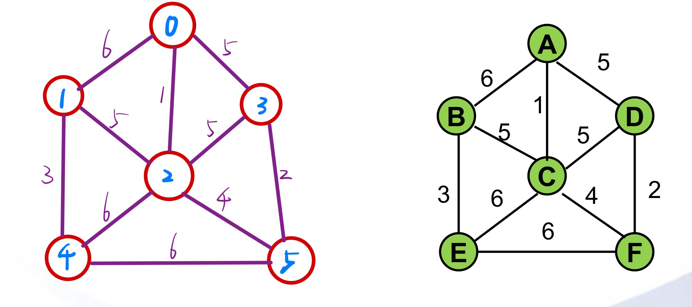

Prim 算法&Kruskal 算法求最小生成树
最小生成树
概述：在一给定的无向图 G=(V,E) 中，(u,v) 代表连接顶点 u 与顶点 v 的边，而 w(u,v) 代表此边的权值，若存在 T 为 E 的子集，且为无循环图，使得 w(T) 最小，
则此 T 为 G 的最小生成树。
当边的权重相同时，最小生成树不唯一，但是最小生成树的权值之和最小是确定的。

这个无向图中有 6 个定点，10 条边。
依次使用 Prim 算法和 Kruskal 算法求解最小生成树。
图的表示
图的表示可以使用邻接表和邻接矩阵。
图的数据存储在 data.txt，第一行表示顶点数 6 和边数 10。然后依次是边的两个顶点和权重。
6 10
0 1 6
0 2 1
0 3 5
1 4 3
1 2 5
2 3 5
2 4 6
2 5 4
3 5 2
4 5 6
一条边由两个顶点和边上的权重表示，edge.h
#ifndef EDGE_H
#define EDGE_H
#include <ostream>
#include <cassert>
using std::ostream;
class Edge {
public:
Edge();
Edge(int a, int b, double weight);
~Edge();
int V(); // 返回第一个顶点
int W(); // 返回第二个顶点
double Wt(); // 返回边的权值
int Other(int x); // 返回边上与顶点x相连另一个顶点
void UpdateWt(double weight);
friend ostream& operator<<(ostream &os, const Edge &e);
bool operator<(Edge &e);
bool operator<=(Edge &e);
bool operator>(Edge &e);
bool operator>=(Edge &e);
bool operator==(Edge &e);
private:
int a_;
int b_;
double weight_;
};
Edge::Edge() {
}
Edge::~Edge() {
}
Edge::Edge(int a, int b, double weight) {
a_ = a;
b_ = b;
weight_ = weight;
}
// 返回第一个顶点
int Edge::V(){
return a_;
}
// 返回第二个顶点
int Edge::W() {
return b_;
}
int Edge::Other(int x) {
assert(x == a_ || x == b_);
if (x == a_) {
return b_;
} else {
return a_;
}
}
double Edge::Wt() {
return weight_;
}
void Edge::UpdateWt(double weight) {
this->weight_ = weight;
}
ostream& operator<<(ostream &os, const Edge &e) {
os << e.a_ << "-" << e.b_ << ": " << e.weight_;
return os;
}
bool Edge::operator<(Edge &e) {
return weight_ < e.Wt();
}
bool Edge::operator<=(Edge &e) {
return weight_ <= e.Wt();
}
bool Edge::operator>(Edge &e) {
return weight_ > e.Wt();
}
bool Edge::operator>=(Edge &e) {
return weight_ >= e.Wt();
}
bool Edge::operator==(Edge &e) {
return weight_ == e.Wt();
}
#endif
使用邻接矩阵存储图，dense_graph.h 稠密图。
#ifndef DENSE_GRAPH_H
#define DENSE_GRAPH_H
// 稠密图：邻接矩阵表示
#include "edge.h"
#include <vector>
#include <iostream>
#include <cassert>
using std::cout;
using std::endl;
using std::vector;
// 邻接矩阵表示稠密图
class DenseGraph {
public:
DenseGraph(int n, bool directed);
~DenseGraph();
int V(); // 图的总节点数
int W(); // 图的总边数
bool HasEdge(int v, int w);
void AddEdge(int v, int w, double weight);
void Show();
class AdjIterator {
public:
AdjIterator(DenseGraph &graph, int v) : G_(graph) {
v_ = v;
index_ = -1;
}
~AdjIterator() {
}
Edge* begin() {
index_ = -1;
return next();
}
Edge* next() {
// 从当前index开始向后搜索, 直到找到一个g[v][index]为true
for (index_ += 1; index_ < G_.V(); ++index_) {
if (G_.g_[v_][index_]) {
return G_.g_[v_][index_];
}
}
// 若没有顶点和v相连接, 则返回nullptr
return nullptr;
}
// 查看是否已经迭代完了图G中与顶点v相连接的所有边
bool end() {
return index_ >= G_.V();
}
private:
DenseGraph &G_;
int v_;
int index_;
};
private:
int n_;
int m_;
bool directed_;
vector<vector<Edge *> > g_; // 图的数据
};
DenseGraph::DenseGraph(int n, bool directed) {
n_ = n;
m_ = 0;
directed_ = directed;
// g初始化为n*n的矩阵, 每一个g[i][j]指向一个边的信息, 初始化为null
g_ = vector<vector<Edge *> >(n, vector<Edge *>(n, nullptr));
}
DenseGraph::~DenseGraph() {
for (int i = 0; i < n_; ++i) {
for (int j = 0; j < n_; ++j) {
if (g_[i][j] != nullptr) {
delete g_[i][j];
}
}
}
}
int DenseGraph::V() {
return n_;
}
int DenseGraph::W() {
return m_;
}
bool DenseGraph::HasEdge(int v, int w) {
assert(v >= 0 && v < n_);
assert(w >= 0 && w < n_);
return g_[v][w];
}
void DenseGraph::AddEdge(int v, int w, double weight) {
assert(v >= 0 && v < n_);
assert(w >= 0 && w < n_);
if (HasEdge(v, w)) {
delete g_[v][w];
if (v != w && !directed_) {
delete g_[w][v];
}
m_--;
}
g_[v][w] = new Edge(v, w, weight);
if (!directed_) {
g_[w][v] = new Edge(w, v, weight);
}
m_++;
}
void DenseGraph::Show() {
for (int i = 0; i < n_; ++i) {
for (int j = 0; j < n_; ++j) {
if (g_[i][j]) {
printf("%.2f \t", g_[i][j]->Wt());
} else {
printf("null\t");
}
}
cout << endl;
}
}
#endif
将 data.txt 的数据存储到图中，read_file.h
#ifndef READ_FILE_H
#define READ_FILE_H
#include <string>
#include <fstream>
#include <cassert>
#include <sstream>
#include <iostream>
using std::string;
using std::ifstream;
using std::stringstream;
using std::cout;
using std::endl;
template <typename Graph>
class ReadFile {
public:
ReadFile(Graph &graph, const string filename) {
ifstream file(filename);
string line;
int V;
int E;
assert(file.is_open());
assert(getline(file, line));
stringstream ss(line);
ss >> V >> E;
cout << "Read Graph V = " << V << ", E = " << E << endl;
assert(V == graph.V());
for (int i = 0; i < E; ++i) {
assert(getline(file, line));
stringstream ss(line);
int a;
int b;
double w;
ss >> a >> b >> w;
assert(a >= 0 && a < V);
assert(b >= 0 && b < V);
graph.AddEdge(a, b, w);
}
}
};
#endif
Prim 算法
Prim 算法基于贪心的策略，每次取权重最小的边。因此需要实现一个最小堆。
#ifndef MIN_HEAP_H
#define MIN_HEAP_H
#include <cassert>
#include <algorithm> // swap
template <typename Item>
class MinHeap {
public:
MinHeap(int capacity);
~MinHeap();
int GetSize();
int GetCapacity();
bool IsEmpty();
void Insert(Item item);
void ExtractMin();
Item GetMin();
private:
void ShiftUp(int k);
void ShiftDown(int k);
private:
Item *data_;
int size_;
int capacity_;
};
template <typename Item>
MinHeap<Item>::MinHeap(int capacity) {
data_ = new Item[capacity+1];
size_ = 0;
capacity_ = capacity;
}
template <typename Item>
MinHeap<Item>::~MinHeap() {
delete [] data_;
}
template <typename Item>
int MinHeap<Item>::GetSize() {
return size_;
}
template <typename Item>
int MinHeap<Item>::GetCapacity() {
return capacity_;
}
template <typename Item>
bool MinHeap<Item>::IsEmpty() {
return size_ == 0;
}
template <typename Item>
void MinHeap<Item>::Insert(Item item) {
assert(size_ + 1 <= capacity_);
data_[size_+1] = item;
ShiftUp(size_+1);
size_++;
}
template <typename Item>
void MinHeap<Item>::ExtractMin() {
assert(size_ > 0);
swap(data_[1], data_[size_]);
size_--;
ShiftDown(1);
}
template <typename Item>
Item MinHeap<Item>::GetMin() {
assert(size_ > 0);
return data_[1];
}
template <typename Item>
void MinHeap<Item>::ShiftUp(int k) {
while (k > 1 && data_[k/2] > data_[k]) {
std::swap(data_[k], data_[k/2]);
k /= 2;
}
}
template <typename Item>
void MinHeap<Item>::ShiftDown(int k) {
while (2*k <= size_) {
int j = 2*k;
if (j + 1 <= size_ && data_[j+1] < data_[j]) {
j++;
}
if (data_[k] < data_[j]) {
break;
}
std::swap(data_[k], data_[j]);
k = j;
}
}
#endif
接下来开始 Prim 算法
// Prim算法求最小生成树
// 最小堆数据结构辅助
#include "min_heap.h"
#include "edge.h"
#include <vector>
using std::vector;
template <typename Graph>
class PrimMST {
public:
PrimMST(Graph &graph):G_(graph), pq_(MinHeap<Edge>(G_.W())) {
// 算法初始化
marked_ = new bool[G_.V()]; // 节点数
for (int i = 0; i < G_.V(); ++i) {
marked_[i] = false;
}
mst_.clear();
// Prim
Visit(0); // 首先访问0号节点
while (!pq_.IsEmpty()) {
Edge e = pq_.GetMin();
pq_.ExtractMin(); // 删除最小元素
// 如果这条边上的两个点都已经被访问，则已经不为横切边了，直接剔除
if (marked_[e.V()] == marked_[e.W()]) {
continue;
}
// 否则，此边为横切边，加入到最小生成树中
mst_.push_back(e);
if (!marked_[e.V()]) {
Visit(e.V());
} else {
Visit(e.W());
}
}
weight_ = mst_[0].Wt();
for (int i = 1; i < mst_.size(); ++i) {
weight_ += mst_[i].Wt();
}
}
~PrimMST() {
delete [] marked_;
}
// 返回最小生成树的所有边
vector<Edge> MSTEdges() {
return mst_;
}
// 返回最小生成树的权值
double MSTWeight() {
return weight_;
}
private:
void Visit(int v) {
assert(!marked_[v]);
marked_[v] = true;
// 将和v相连的所有未被访问的边加入最小堆中:图的邻边迭代器
typename Graph::AdjIterator adj(G_, v);
for (Edge* e = adj.begin(); !adj.end(); e = adj.next()) {
// 如果与v相连接点未被标记，则此边为横切边，
// 将此边加入到最小堆中，作为备选
if (!marked_[e->Other(v)]) {
pq_.Insert(*e);
}
}
}
private:
Graph &G_;
MinHeap<Edge> pq_; // 最小堆优先队列
bool *marked_; // 节点是否被标记
vector<Edge> mst_; // 保存最小生成树的边
double weight_; // 最小生成树的权值
};
Kruskal 算法
Kruskal 也需要取最小的边，但是它还需要判断是否会产生环，不会产生环才能将边加入最小生成树。
通过并查集（Union Find）可是实现环的检测。union_find.h
#ifndef UNION_FIND_H
#define UNION_FIND_H
#include <cassert>
class UnionFind {
public:
UnionFind(int n);
~UnionFind();
int Find(int p);
bool IsConnected(int p, int q);
void UnionElements(int p, int q);
private:
int *parent_; // parent[i] 表示i元素的根节点
int *rank_; // rank[i]表示以i为根的集合所表示的树的层数
int count_;
};
UnionFind::UnionFind(int n) {
parent_ = new int[n];
rank_ = new int[n];
count_ = n;
for (int i = 0; i < n; ++i) {
parent_[i] = i;
rank_[i] = 1;
}
}
UnionFind::~UnionFind() {
delete [] parent_;
delete [] rank_;
}
int UnionFind::Find(int p) {
assert(p >= 0 && p < count_);
while (parent_[p] != p) {
p = parent_[p];
}
return p;
}
bool UnionFind::IsConnected(int p, int q) {
return Find(p) == Find(q);
}
void UnionFind::UnionElements(int p, int q) {
int p_root = Find(p);
int q_root = Find(q);
if (p_root == q_root) {
return;
}
if (rank_[p_root] < rank_[q_root]) {
parent_[p_root] = q_root;
} else if (rank_[p_root] > rank_[q_root]){
parent_[q_root] = p_root;
} else {
parent_[p_root] = q_root;
rank_[q_root] += 1;
}
}
#endif
接下来实现 Kruskal 算法。
#ifndef KRUSKAL_H
#define KRUSKAL_H
#include "min_heap.h"
#include "edge.h"
#include "union_find.h"
template <typename Graph>
class KruskalMST {
public:
KruskalMST(Graph &graph) {
// 算法初始化
marked_ = new bool[graph.V()]; // 节点数
for (int i = 0; i < graph.V(); ++i) {
marked_[i] = false;
}
mst_.clear();
// 将所有的边存放到一个最小堆中
// 创建一个容量为边的总数的堆
MinHeap<Edge> pq(graph.W());
for (int i = 0; i < graph.V(); ++i) {
typename Graph::AdjIterator adj(graph, i);
marked_[i] = true;
for (Edge* e = adj.begin(); !adj.end(); e = adj.next()) {
if (marked_[e->V()] && marked_[e->W()]) {
continue;
}
pq.Insert(*e);
}
}
UnionFind uf = UnionFind(graph.V()); // 节点数
while (!pq.IsEmpty() && mst_.size() < graph.V() - 1) {
// 从最小堆中依次从小到大取出所有的边
Edge e = pq.GetMin();
pq.ExtractMin(); // 从堆中删除
// 如果该边的两个端点是联通的, 说明加入这条边将产生环, 扔掉这条边
if(uf.IsConnected(e.V(), e.W())) {
continue;
}
// 否则, 将这条边添加进最小生成树, 同时标记边的两个端点联通
mst_.push_back(e);
uf.UnionElements(e.V(), e.W());
}
weight_ = mst_[0].Wt();
for (int i = 1; i < mst_.size(); ++i) {
weight_ += mst_[i].Wt();
}
}
~KruskalMST() {}
// 返回最小生成树的所有边
vector<Edge> MSTEdges() {
return mst_;
}
// 返回最小生成树的权值
double MSTWeight() {
return weight_;
}
private:
vector<Edge> mst_; // 保存最小生成树的边
double weight_; // 最小生成树的权值
bool* marked_;
};
#endif